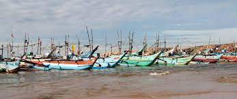
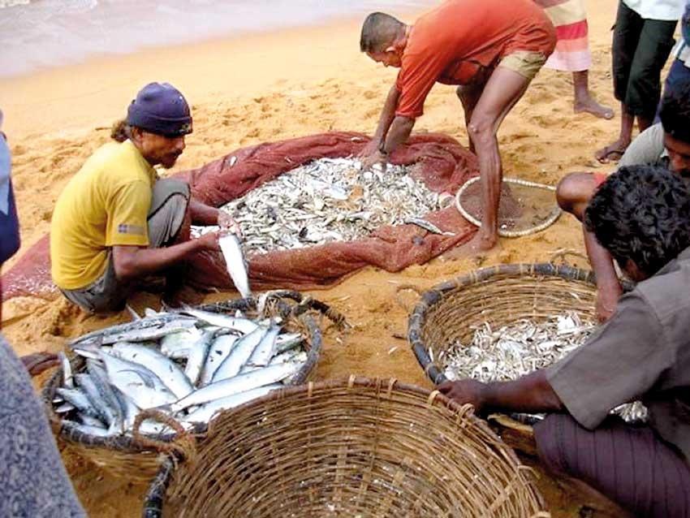
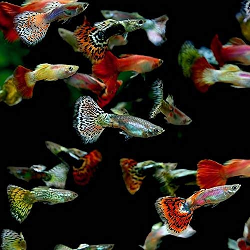
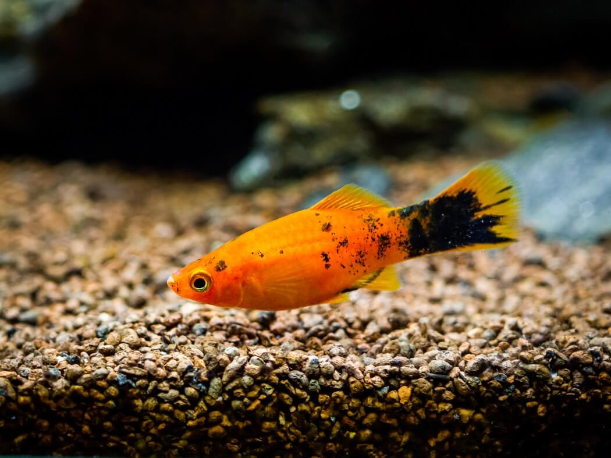
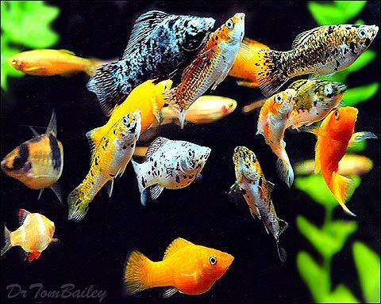
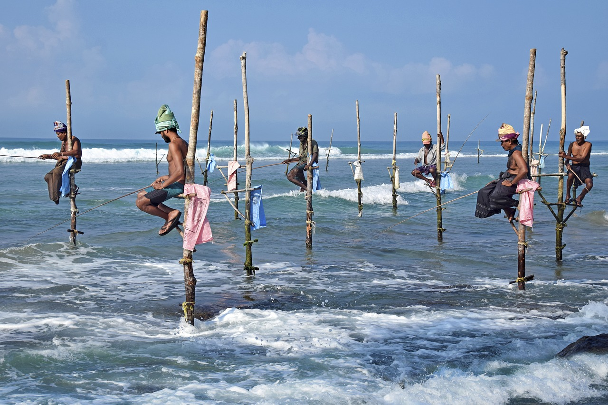

Introduction
Sri Lanka, surrounded with warm and nutrient-filled waters and filled with many rivers and lakes, enjoys a wealth of fisheries opportunities. Having extensive coast-line as well as numerous reservoirs and lakes throughout the country, provide opportunities for both inland and deep-sea fishing. This fisheries sector plays a key role in Sri Lanka’s social and economic life and it consists of three main subsectors, namely coastal, offshore or deep sea and inland or aquaculture.
Major Sectors of Fishing in Sri Lanka
Marine Fisheries
- 
- 
-
Inland Fisheries
-

Inland Fishing -

Fishing in a lake -

Net Fishing -
Deep-Sea Fishing
-

Deep sea fishing in Hikkaduwa -

Deep sea fishing on Weligama Bay - Western and Southern Coasts - November to April
- South-Eastern Coast - Only in April
- Eastern Coast - May to September
-
Ornamental Fish Farming
-

Guppy -

Swordtail -

Platy -

Molly
Marine fisheries are of considerable social and economic importance around the entire 1770 km of Sri Lanka’s coastline.The marine area from shore to the edge of the continental shelf is referred to as the coastal sub-sector. The balance beyond the continental shelf and out to 200 nm boundary is considered the offshore and deep-sea subsector. The fishing industry in Sri Lanka is taking place in both sub-sectors. Marine fish production contributes nearly 90% of the total fish catch, of which the coastal fish catch is 60% while rest is from deep-sea fish catching.
Stilt Fishing
Stilt fishing is one of the most interesting traditional fishing methods in Sri Lanka which can be seen in coastal fish catching. The beautiful sight of fishermen perched branched poles as they fish skillfully during dawn, noon and dusk; can now be commonly along the southern coast in towns such as Koggala , Kaththaluwa, and Ahangama. Some fishers around the coastal areas of the country use small boats or fishing knots for catching fishes. Fishing activities take place around the entire coast of the country, with landings made, at 12 fishery harbor centers, several large and small anchorages and as many as 700 village-level sites.
Sri Lanka has 103 perennial rivers, of which 23 river basins are larger than 500 km2. Of the total area of about 280 000 ha of inland water bodies, 160 000 ha are lakes and ponds, while the rest (120 000 ha) consists of lagoons and marshlands.
Inland reservoirs and tanks usually carry water all the year round and other reservoirs and tanks are seasonal. Brackish-water resources are situated in the coastal belt in the form of estuaries, lagoons or marshes. Although indigenous species like Labeo dissoumeari and Puntius sarana are found in inland fish catches, their commercial importance is quite low. Introduced fish species, such as tilapias (Oreochromis mossambicus and O. niloticus) dominates inland fish landings. Attempts have also been made to introduce Indian and Chinese crap species into reservoirs.
Deep-Sea Fishing can be categorized as either great adventure sport or as a part of the marine fish catching sector . Travelers of fishers who would engage in this deep-sea fishing activity will have to spend a few hours at the middle sea. This opportunity is much available in Sri Lanka’s coastal area as it is surrounded by the deep blue waters of the Indian Ocean. It offers travelers with so many adventurous activities and various water sports including deep-sea fishing.
Close to the coast, you’ll find Grouper, Snapper Emperor, Bonefish; a bit further out Indian Mackerel, Spanish Mackerel, Seerfish, Kingfish, Barracuda, Baramundi, Jackfish, Trevally, Tuna and far-out Sailfish, Swordfish, Marlin, and Shark During trolling you often can see schools of dolphins accompanying the boat.
Accessible months for deep fishing
You can select either a morning session or an evening session and expert fishing guides will advise you the best timing depending on the weather and the month.
Sri Lankan ornamental fish breeders export 35 species of ornamental fish. Freshwater fish such as Neon tetra and guppy account for 60% of the export trade. Marine ornamental fish contribute to 20% and the brackish fish support for 5% of the export trade. Major markets for the aquarium trade are The United States, United Kingdom, Czech Republic, Germany, France, Japan, China, Poland, Italy, and Canada.
The main ornamental fish species dominating the Sri Lankan export market are Guppy, Neon tetra, Platy, Swordtails, Molly, Angels, Goldfish, Zebra danio, and Discus. Out of these species, 60% of the total exports consist of Guppy, Swordtail, Platy, and Molly. There is a growing demand for ornamental exotic fish. Therefore, the development of technology for the production of high-quality fish of high demand species and breeding of new varieties via hybridization has been identified as the main requirement for the development of the industry.